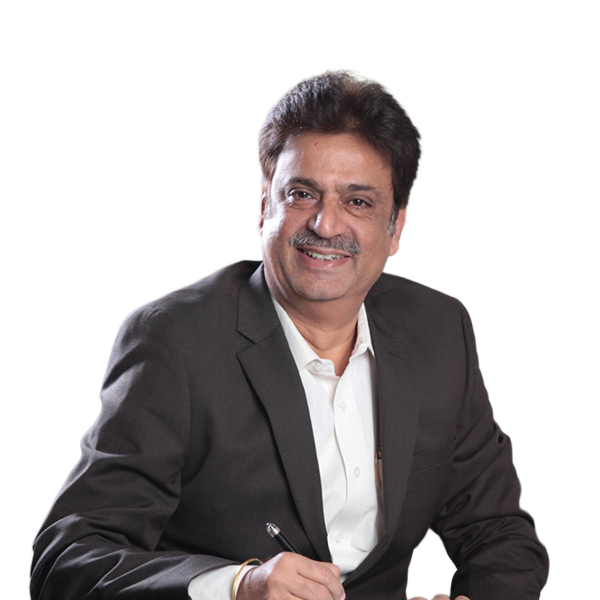

Jawahar H. Hemrajani
Chairman and Director
After successfully completing his degree in Law and Commerce, Jawahar H. Hemrajani took up a modest 9-to-5 job but always yearned for something more fulfilling. He eventually set up a facility to coat powder on metal in Mumbai, India. After establishing one successful business, he decided to conquer new horizons by setting up Glass Wall Systems.
Having been in the façade business for over 33 years, Jawahar has a keen understanding of the technical intricacies and how one can push boundaries to create new architectural wonders. His entrepreneurial knowledge and expertise contribute largely to all projects, in particular when dealing with advanced and complex façades to ensure the client’s highest expectations are being meticulously achieved by GWS.
Jawahar has been spearheading the company’s current journey towards global expansion by seizing geographical opportunities. At Glass Wall Systems, he is looking forward to bringing his rich experience to global customers.